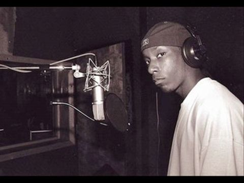
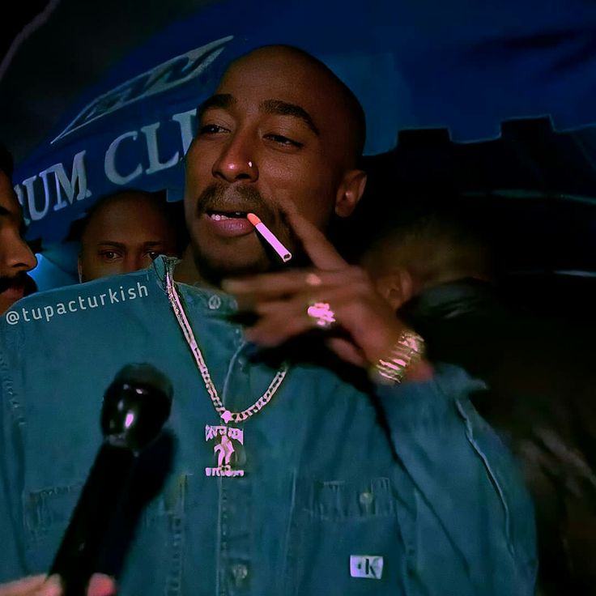
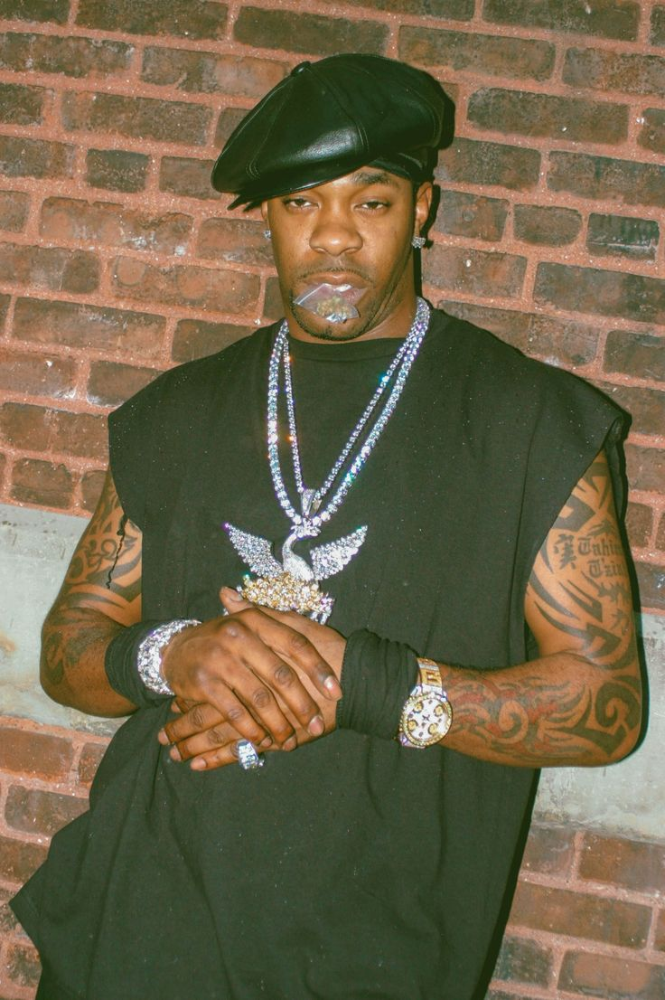
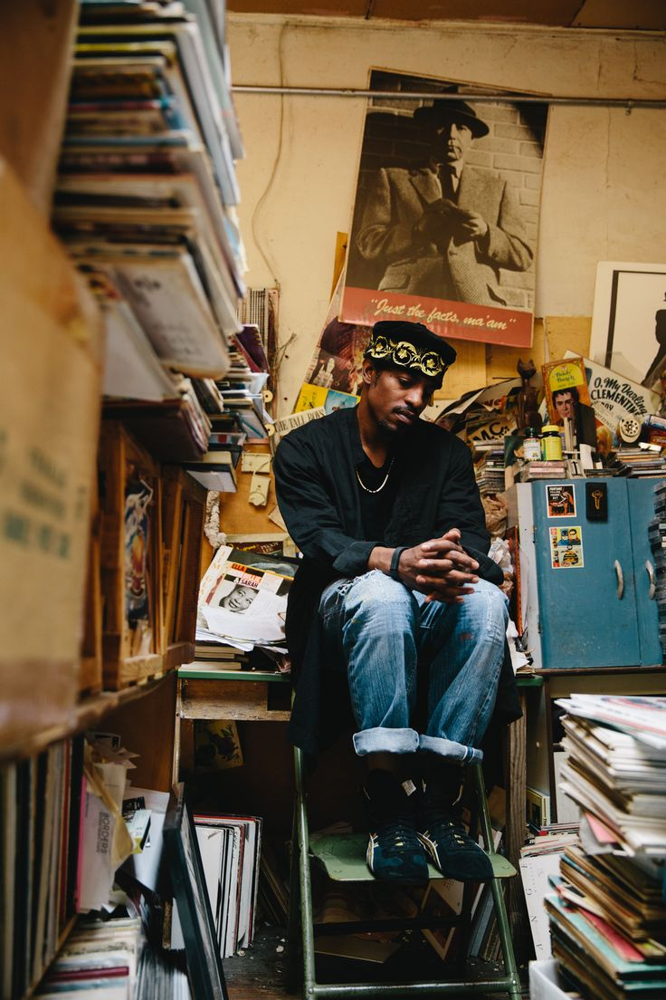
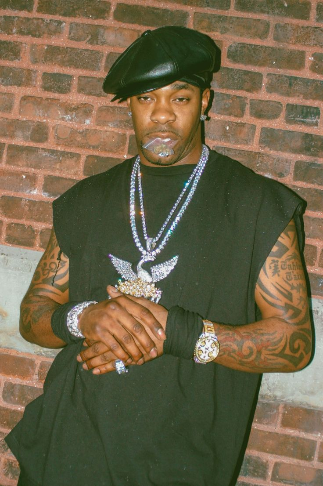
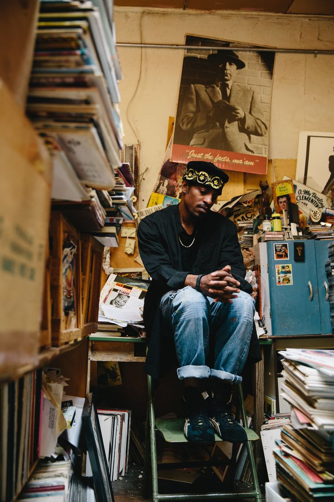

.png)
The 90s was a transitional period for black people around the world, specifically hip hop. Hip hop began to expand in ways we could not imagine from fashion to dance to lyrical styles. Black people were given the opportunity to express themselves in ways they could not before. In the early 90s, producers began using audio editing software and digital effects to create new styles and to sample beats. Also, in the 90s artist created a new style of socially-conscious hip hop when they began rapping about political and social issues. These new ideas began the expansion of music that we see today. 90s music birthed many legends such as Tupac, Biggie and Aaliyah that are credited for “changing the game.” In the 1990s, the “hip-hop/rap” genre exploded to become, by far, the most common genre of music on the Billboard Hot 100 charts for two decades.
.gif)
The only thing Rap fans love besides Rap itself is arguing about it.
If someone asked you what music you would prefer to listen to if you had headphones glued to your ears for the rest of your life? What would you say?
You can’t even imagine how many people would prefer to play ’90s rap songs.
The 90s rap culture was legendary and still remains popular among millions of people.
Yeah, some people really, actually, seriously believe that hip hop is better today. But come on, isn’t this nonsense?
.jpg)
Sure, the technologies are advanced, and now there’s a lot of free music out there. And this music is good. But it’s the number of tracks posted every day that makes it hard to find some really good music nowadays. The rap culture has changed, and most of the things that were taken for granted at the time are gone. Now, when that era is gone, it becomes obvious how much better it used to be. You’ve probably heard that ’90s rap music was the golden era for Hip Hop. Artists from the ’90s, like Tupac Shakur, the Wu-Tang clan, Onyx, Lords of the Underground, Biggie Smalls, and many others, have changed the world in some ways through their music.
What Is Hip-Hop Music?
Hip-hop is a genre of music most often characterized by a strong, rhythmic beat and a rapping vocal track. The genre originated in New York City in the 1970s as a cultural exchange among Black, Latino, and Caribbean youth and has grown into one of the most consumed genres of music in the United States. As a culture, hip-hop is built on four main pillars: DJing, rapping (also called MCing), breakdancing (usually called breaking or b-boying), and graffiti.

Since its inception, hip-hop has birthed dozens of subgenres, including trap, grime, gangsta rap, rap rock (or nu metal), crunk, chillhop, bounce, mumble rap, Latin hip-hop, and conscious hip-hop. Notable hip-hop artists and acts include DJ Kool Herc, Tupac Shakur, The Notorious B.I.G., The Roots, Nas, Jay-Z, Lil’ Kim, N.W.A, Wu-Tang clang, Big Daddy Kane, Rakim, and Ice Cube.

1. Strong, rhythmic beat: A rhythmic beat is the strongest unifying factor of hip-hop music. It can be fast and aggressive or slow and relaxed, but it carries the song steadily forward and serves as a backdrop for vocal performance. Most beats in hip-hop songs aren’t simple drum lines—beat-making is a complex and varied art form that results in other songs and sounds.
2. Vocals: The majority of hip-hop songs incorporate rapping as their main vocal style—a rhythmic, usually rhymed type of chant that interplays with the beat. Other vocal styles include singing, spoken word, autotune, and ad-libs.
3. Breaks: “Break” is a term for long percussive periods in a hip-hop song—in the 1970s, DJ Kool Herc is credited with developing the concept of a break and encouraging dancing (called “breakdancing,” “breaking,” or “b-boying”) during these instrumental measures. Modern hip-hop songs often include breaks to hearken back to the genre’s roots or encourage dancing.
Why was the ‘90s Rap so much better than it is now?
.gif)
The hip-hop style and its musical basis – the rhythmic reading of uncomplicated verses to the accompaniment of a musical instrument that has turned up, rap – began to develop in the 1970s in the United States among African Americans. By the 1980s, hip-hop had become the mainstream culture of the black urban population, which was then a minority in America. Records of black boy bands were filled with social demands and creepy tales about the life of the city slum.
Focusing on socially sensitive topics, hip-hop was a reaction to conservative American politics. Protest lyrics in street language, understandable to African Americans, talked about life in the wild and in prison, about crime and religion, about a big country and the small happiness. You can find it there. Black guys hung with Gold embodied a real American dream: the stars of hip-hop were becoming role models of how the guy from the poor district gnaws out of the cruel world his first million.
In ’82, Grandmaster Flash & The Furious Five recorded a track, The Message. It is believed that in this song, for seven minutes, the whole truth is told about the hardships of the life of black youth, who are trapped with drugs, prostitution, prison, and early death in the slums of New York.
The authors were justifiably proud that they did not hide the bitter truth: The Message, each verse of which ended with the refrain “Don’t push me\’Cause I’m close to the edge,” quickly took fourth place on the Billboard charts (they were called Hot Black Singles at the time).
Rap in the period from 1986 to 1997 can be described by three adjectives – innovative, bold, and timely. It was then that the whole multifaceted nature of hip-hop as a philosophy, the art of modern times, and a fashionable trend was fully revealed. The work of the legendary artists at that time showed the full potential of the rap scene, and the artists themselves became the immortal titans of the genre.


I’ll say it again. Because even though we had and still have a number of movements going on, like #MeToo, and Black Lives Matter, our Top rappers are not focusing on social issues. Modern-day rappers cooperate with big corporations and big labels, and they are afraid to lose the money flow. The whole point of rap is about showing what’s happening around you, bringing up the disturbing topics of your life, and making the world hear it and then change it. Now they’re afraid of losing all the sponsorships and concert promoters, so they stay quiet.
This’s one of the main (and most disturbing) differences. The industry isn’t the same. It’s not what it was in the ‘90s.
At the same time, now musicians don’t sell their music the way that rappers did in the ’90s. At that time, it was the controversy that helped them draw the attention of younger generations in the suburbs and sell their albums. I’m not mentioning the people who were buying those albums only to burn them during protests.
Though on the other hand, then rappers managed to sell their albums even without that much support. It’s impressive how they kept expressing their thoughts even when nobody really cared and was even against them.
There have been and are rappers who have been focusing on social issues ever since. Still, many of these rappers are not mainstream or hyper-popular, and there are really no mainstream and popular rappers who release singles like Tupac’s ‘Brenda’s Got a Baby’ or ‘Keep Your Head Up’
At that time, they were releasing those provocative singles as well as «classic» songs that were also really great to listen to. They had some kind of balance that modern artists don’t seem to have.
Earlier it took courage to release this music that focused on major social issues of black people, as politicians of the country were describing rap as some kind of cancer for the young generation.


.jpg)


 





3.They knew how to tell their stories.
Back then, artists were real craftsmen and songwriters. The melody was important then; it was just not more important than the story, as it sometimes is now. People like to be aware of where the artists were in space and time. It’s just interesting to hear their story as the artist describes: I’m here, and this is what’s happening to me, and this is what I think about it. Then you could decipher someone’s individuality, someone’s personality. That’s what was great about the ‘90s. Music should always be about emotion and story. There’s a reason you share it as an artist. Hip hop not just improved storytelling, but it perfected it.
Most rappers claimed that they were talking about what they saw. And basically, a lot of the GOAT rappers were discussing grim things, the realities of shanty town life in the age of crack cocaine.
Today there’re five things rappers talk about in their tracks, which are: women, money, drugs, parties, and guns. Even though ’90s rappers also covered those topics, they did not limit themselves to those five topics, and that’s what makes it better.
Before, rap was developing naturally, based on competition and creativity. Now, they jump from one trend to another, from krunk to sing-songy rap, etc. Today hip hop became corporate, as most of the famous worldwide artists are all about money, bragging about drugs and women.
4. Their albums were poppin’.
And they were cohesive. At the time, they wanted a great single but also wanted the album to be cool. They wanted their albums to tell a story, wanted them to have a theme, a purpose. I think it was important then, and we can only wish it was more important now. You could listen to one song and then smoothly move on to the next song. Now it seems like 12 different people have recorded 12 different songs.
Who Dominated Hip-Hop’s Golden Era?
1. the ‘90s had its GOATs.
Under any modern track on YouTube, you’ll find some comments claiming they can’t be compared to the ‘90s rap legends. And yeah, it can be exaggerated, but they might have a point.
At that time, the industry was changing because of The Wu-Tang Clan, Snoop Dogg, Dr. Dre’s The Chronic, Onyx, Lords of the Underground, Fu-Schnickens, Ol’ Dirty Bastard, etc.
Their talents and their tracks were exceptional. So, at that time, the classics were released month after month, and I had real doubts that something like this might happen again. This is what makes the ‘90s rap the best, and that’s why modern rap can’t be compared to it.
2. The Wu-Tang Clan
This is a group of rappers from Staten Island who, in some ways, were symbols of a hip-hop revolution. They’ve changed not only the sound but also the business of rap music forever. The clan had the following members – GZAб RZA, Raekwon, U-God, Ghostface Killah, Ol’ Dirty Bastard, Method Man, Inspectah Deck,and later Cappadonna – who had a mutual mission.
As RZA, the group’s founder claims, the mission was: “To open up the minds of the youth and the people and become aware of our people, our situation, our community, martial arts, knowledge of self, and all the things that we put into those songs. Wu-Tang Clan is regarded as a highly influential group in hip hop, helping to popularize and develop the East Coast hip hop and hardcore hip hop styles.»
3. Lords of the Underground
These guys match socially conscious raps with hard-hitting beats. They had nothing to do with the violent gangsta rap, even though the name of the trio kinda implies it. They were one of the greatest bands of the nineties, hip hop. In 1993 the Here Comes The Lords album became one of the defining albums of the period not only for the group but also for the whole industry.
5.Fu-Schnickens
TFu-Schnickens were one more incredible American hip hop trio. Their music was Similar to Das EFX because of its cartoonish lyrics, but they became the first hip-hop group to rhyme in a backward fashion.
Even though their popularity was very brief, they had a significant impact on rap history. “What’s up, Doc? (Can We Rock), was their most famous track in the ‘90s.
6.Ol’ Dirty Bastard
One of The Wu-Tang Clan’s members. Born in Brooklyn, New York, on November 15, 1968. Ol’ Dirty Bastard became famous as part of the famous group I’ve already mentioned. His first debut album in 1995 scored hits with the tracks “Ghetto Supastar” and the remix of Mariah Carey’s “Fantasy.”
Should I say his music had a crucial impact on the rap music industry? One decent rapper in the ‘90s was worth a hundred modern ones. They were a different breed.
After all, I could give you a million reasons why modern rap is nowhere near the ‘90s rap, but the evidence speaks for itself. Nothing sounds and feels the same as old-school rap. Even after a few decades, this music can get the party started even if the crowd has never heard these tracks before.
The ‘90s artists have shaped rap music and culture. This was a decade full of legends when the style of production was more gritty, and the music industry was less formulaic than it is now.
Earlier artists were ready to experiment with the sounds and styles and willing to express themselves even when so many people wanted them to be silent. Nowadays, artists only chase radio and follow the same formula.
And yeah, in some ways, this is the nostalgia that makes old music seem better than it actually was back then. People look back and remember the good times. That’s what makes old music so special for them.
But not with the ‘90s rap. It was legendary, unique, and had nothing to do with nostalgia.